01 · Dashboard — canlı operatör metrikleri01 · Dashboard — live operator metrics
Toplam bahis/kazanç, GGR, ortalama RTP, aktif oyuncu ve operatör sayısı — hepsi bir önceki dönemle kıyaslı. Saatlik bahis×kazanç grafiği, 1H/6H/24H/7D aralık seçici ve WebSocket'ten akan canlı spin feed'i.
Total wager/win, GGR, average RTP, active players and operators — each compared to the previous period. Hourly wager×win chart, 1H/6H/24H/7D range picker, and the live spin feed streaming over WebSocket.
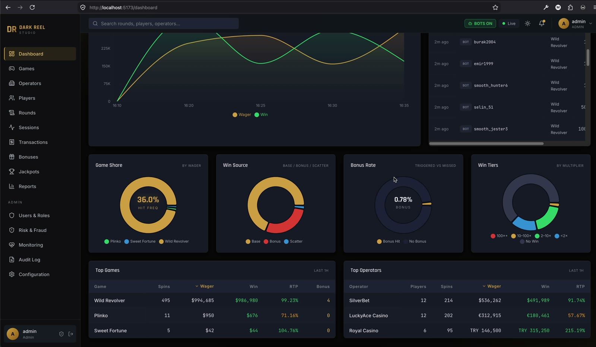
Dashboard — kırılımlarDashboard — breakdowns
İsabet frekansı, kazanç kaynağı (base/bonus/scatter), bonus oranı ve kazanç kademeleri; altta en çok oynanan oyunlar ve operatörler — her tablo 7 ayrı anahtara göre sıralanabilir.
Hit frequency, win source (base/bonus/scatter), bonus rate and win tiers; below, top games and top operators — each table sortable by 7 different keys.
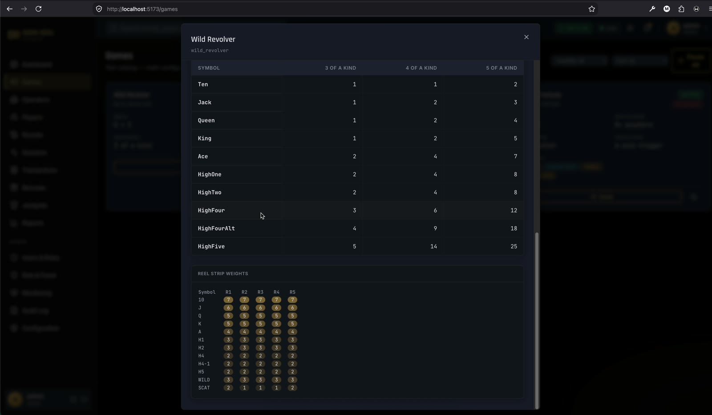
02 · Games — oyun detayı02 · Games — game detail
Ödeme tablosu, makara ağırlıkları ve tüm zamanlar istatistikleri; RTP varyantları buradan tanımlanır ve tek tıkla doğrulama probu koşulur. Görünüm oyun tipine göre değişir: payline, cluster ve plinko ayrı detay bileşeni alır. Toplu durdur/başlat da bu modülde.
Paytable, reel weights and all-time stats; RTP variants are defined here and a one-click verification probe runs against them. The view adapts to game type: payline, cluster and plinko each get their own detail component. Bulk pause/resume lives here too.
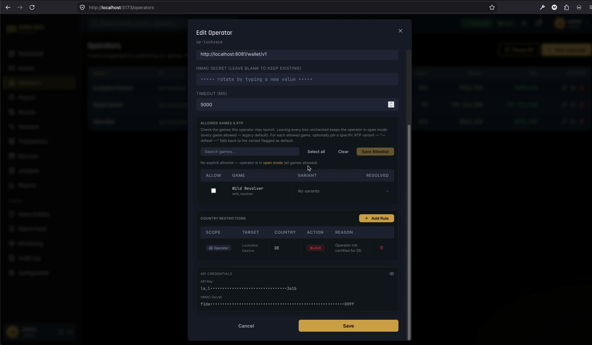
03 · Operators — operatör düzenleme03 · Operators — editing an operator
B2B tarafın kalbi: API anahtarı, cüzdan adaptörü seçimi (dahili ya da HTTP PAM callback + HMAC secret + zaman aşımı), operatöre özel oyun allowlist'i ve oyun başına RTP varyant ataması — aynı oyun iki operatörde farklı RTP ile koşabilir.
The heart of the B2B side: API key, wallet adapter choice (internal or HTTP PAM callback + HMAC secret + timeout), a per-operator game allowlist and per-game RTP variant assignment — the same game can run at different RTPs for two operators.
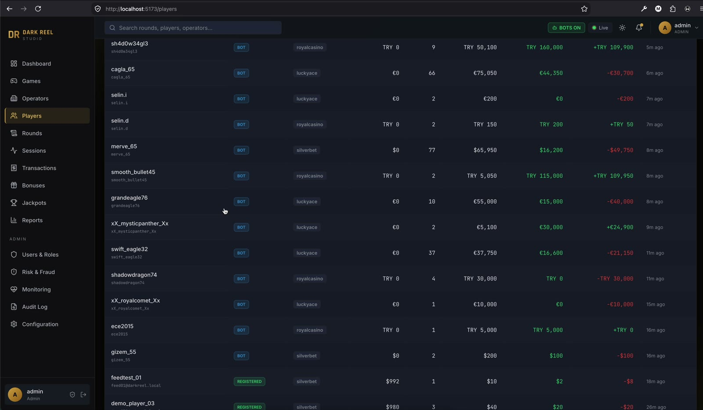
04 · Players — oyuncu listesi04 · Players — player list
Kayıtlı / misafir / bot ayrımı rozetlerle; operatör filtresi, hızlı filtreler (son 1 saatte aktif, 24+ saat sessiz, net kazançta / kayıpta) ve 10 sıralanabilir kolon.
Registered / guest / bot separated by badges; operator filter, quick filters (active last hour, quiet 24h+, net up / net down) and 10 sortable columns.
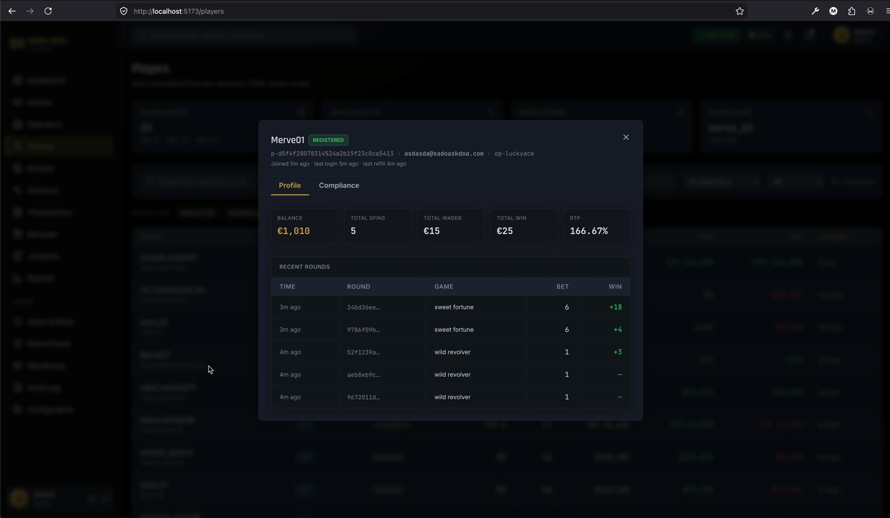
Players — oyuncu detayı & uyumlulukPlayers — detail & compliance
Profil sekmesinde bakiye, spin ve son turlar; uyumluluk sekmesinde KYC belge akışı (yükle → incele → onayla/reddet), self-exclusion ve dönemsel bahis/kayıp/oturum/yatırım limitleri. Limitler süs değil: spin yolunda, debit'ten önce denetlenir.
Profile tab: balance, spins, recent rounds; compliance tab: the KYC document flow (upload → review → approve/reject), self-exclusion, and periodic wager/loss/session/deposit limits. The limits aren't decoration: they're enforced in the spin path, before the debit.
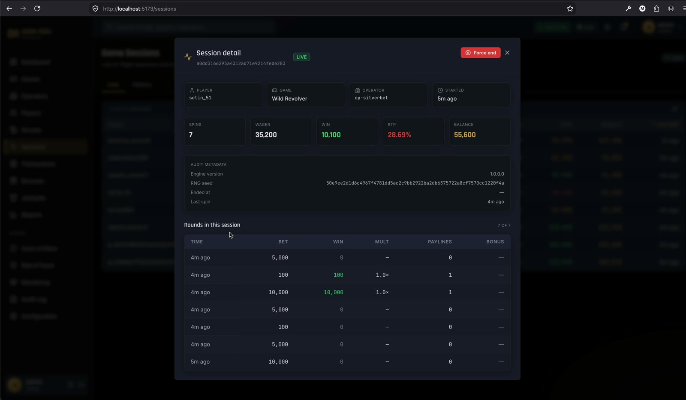
05 · Sessions — oturum detayı05 · Sessions — session detail
Canlı sekmesi bellekteki açık oturumları, geçmiş sekmesi kalıcı kayıtları gösterir; oturum içi turlar ve anlık RTP burada. Sağ üstte gerekirse oturumu zorla bitirme.
The Live tab shows open in-memory sessions, History the persisted ones; per-session rounds and live RTP are here. Top right: force-end a session when needed.
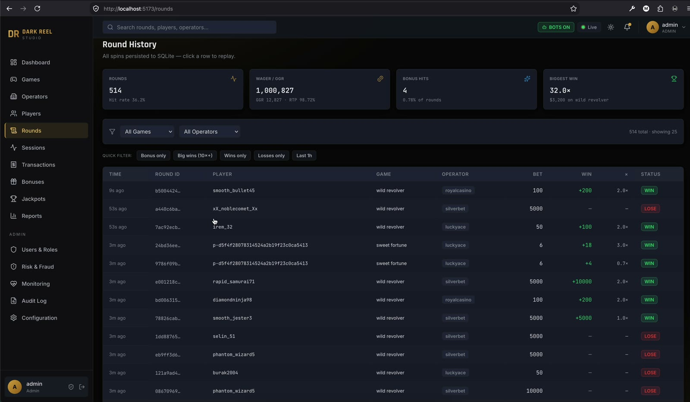
06 · Rounds — tur geçmişi06 · Rounds — round history
Her spin bir satır: oyun/operatör filtreleri ve hızlı çipler (yalnız bonus, 20×+ büyük kazanç, yalnız kazanç/kayıp). Her satır replay'e açılır; rollback, her çocuk işlem için telafi edici Refund yazar ve operatör cüzdanına aynen yansıtılır.
Every spin is a row: game/operator filters plus quick chips (bonus only, 20×+ big wins, wins/losses only). Every row opens into replay; rollback writes a compensating Refund per child transaction and mirrors it to the operator wallet.
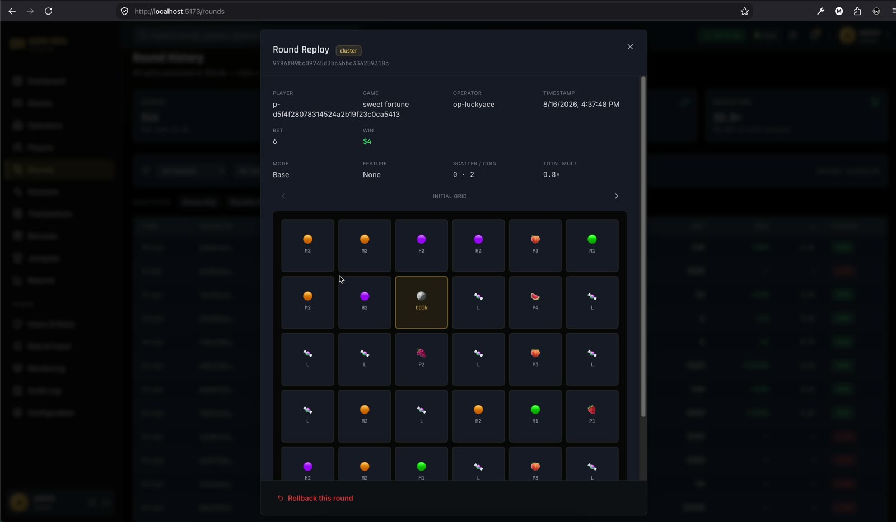
Rounds — cluster replayRounds — cluster replay
Payline replay'in kardeşi: 6×5 tumble zinciri adım adım geri oynatılır. Admin/QA için ayrıca deterministik sunucu doğrulaması var — seed'den grid byte-byte yeniden üretilir ve karşılaştırılır.
The sibling of payline replay: the 6×5 tumble chain plays back step by step. Admin/QA additionally get deterministic server verification — the grid is re-derived from the seed byte-for-byte and compared.
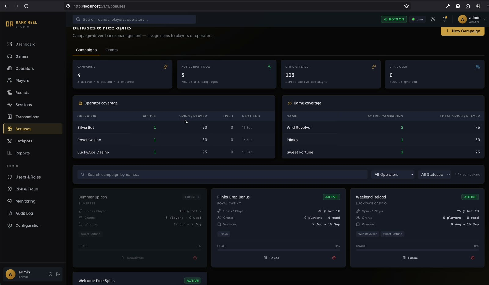
07 · Bonuses — kampanyalar07 · Bonuses — campaigns
Kampanya yaşam döngüsü (aktif/duraklatılmış/iptal/süresi dolmuş), operatör ve oyun kapsamı, kullanım ilerlemesi. Grants sekmesi tek tek tanımlara iner: iptal, kampanya kullanım özeti ve grant başına spin-olay defteri — bonus spini hangi turda yandı, kayıtlı.
Campaign lifecycle (active/paused/cancelled/expired), operator and game coverage, usage progress. The Grants tab drills into individual grants: cancellation, campaign usage rollup and a per-grant spin-event ledger — which round consumed which bonus spin is on record.
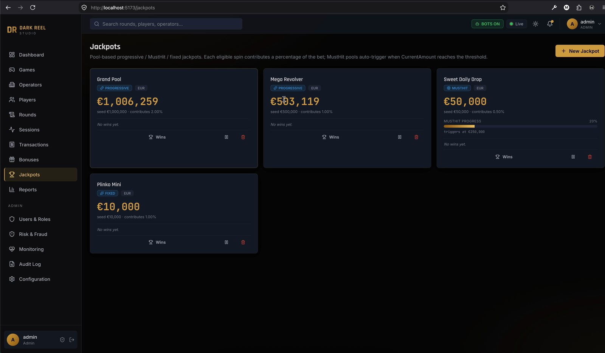
08 · Jackpots — havuzlar08 · Jackpots — pools
Üç tip: sabit, progresif ve MustHit — eşiğine gelince kendiliğinden tetiklenir ve seed tutarına sıfırlanır. Katkı oranı, uygun oyun listesi, para birimi kapsamı, canlı sayaç, kazanım geçmişi ve manuel tetik.
Three types: fixed, progressive and MustHit — firing automatically at its threshold and resetting to the seed amount. Contribution rate, eligible-game list, currency scoping, live ticker, win history and a manual trigger.
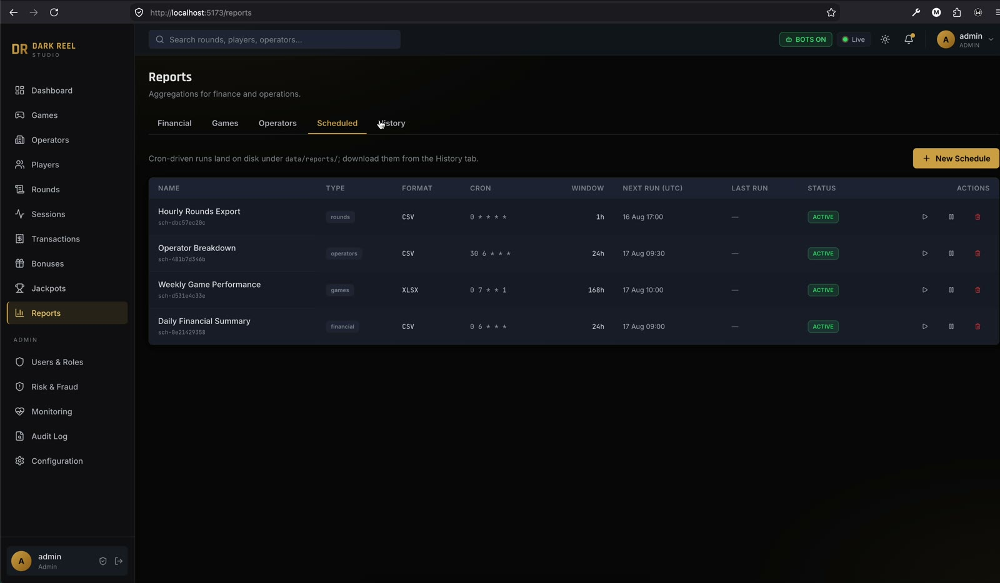
09 · Reports — zamanlanmış raporlar09 · Reports — scheduled reports
Finansal, oyun ve operatör raporları CSV/XLSX indirilir; buradaki sekme cron ifadeleriyle otomatiğe bağlar (saatlik tur dökümü, haftalık oyun performansı, günlük finansal özet). Üretilen her artifact geçmişte durur, yeniden indirilebilir.
Financial, game and operator reports export as CSV/XLSX; this tab automates them with cron expressions (hourly rounds export, weekly game performance, daily financial summary). Every generated artifact stays in history, re-downloadable.
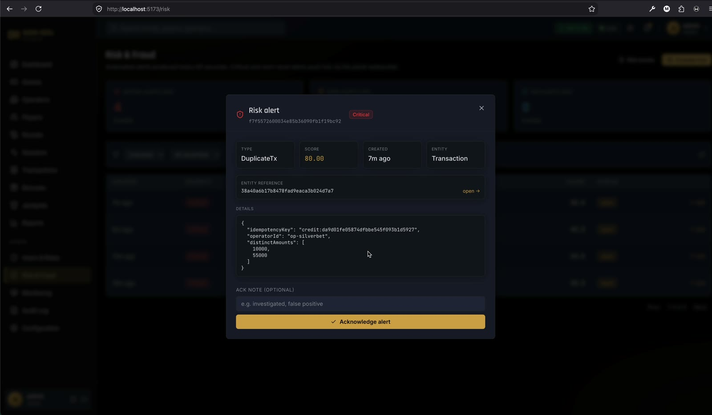
10 · Risk & Fraud — uyarı detayı10 · Risk & Fraud — alert detail
Dört kural 60 saniyede bir koşar: eşik üstü kazanç, RTP sapması, rollback istismarı, mükerrer işlem. Uyarı, katkı faktörleri JSON'u ile gelir; oyuncu ve operatör için bileşik risk skorları ayrı sayfada. Aynı sapmanın her dakika yeni satır yazmaması için saatlik dedupe var.
Four rules run every 60 seconds: over-threshold wins, RTP deviation, rollback abuse, duplicate transactions. Alerts carry a contributing-factors JSON; composite risk scores for players and operators get their own page. Hourly dedupe keeps a sustained deviation from writing a new row every minute.
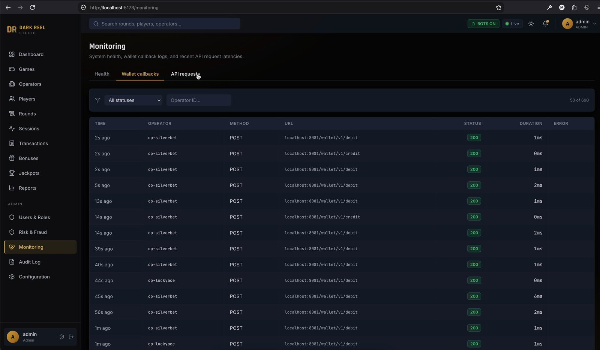
11 · Monitoring — sağlık ve loglar11 · Monitoring — health and logs
Üç sekme: sistem sağlığı (DB dahil), cüzdan callback kayıtları ve son API istekleri — operatör, metod, durum, süre ve gecikme histogramı ile. Spin bölümündeki callback JSON ekranı bu modülün detayıdır.
Three tabs: system health (DB included), wallet callback logs and recent API requests — operator, method, status, duration, plus a latency histogram. The callback JSON screen in the spin section is this module's detail view.
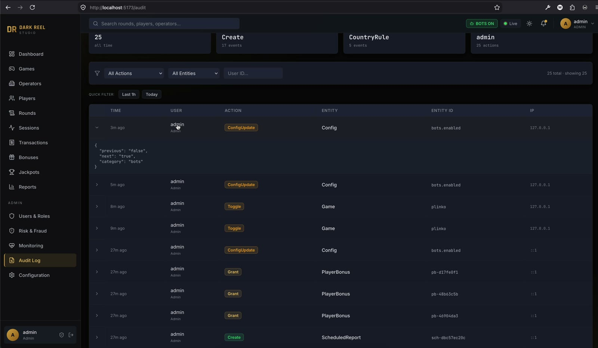
12 · Audit Log — kim, neyi, neden12 · Audit Log — who changed what
14 aksiyon tipi, 8 varlık tipi: config değişikliğinden CertHashMismatch ve WalletCreditFailed'e kadar. Yapılandırma değişikliklerinde önceki/sonraki değer JSON diff olarak açılır — ekranda görünen tam da bu.
14 action types across 8 entity types: from config edits to CertHashMismatch and WalletCreditFailed. Config changes expand into a before/after JSON diff — exactly what's on screen.
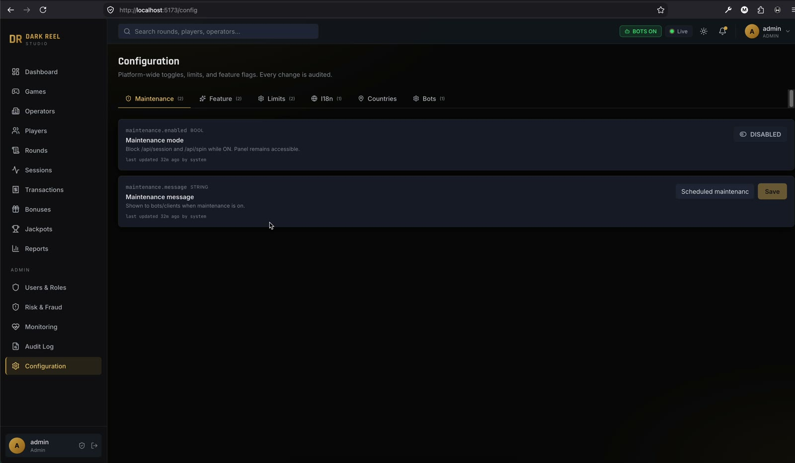
13 · Configuration — kill switch'ler13 · Configuration — the kill switches
Platform geneli bakım modu (/api/session ve /api/spin anında 423 döner, oyuncu sitesi bakım sayfasına geçer), özellik bayrakları, bahis limitleri, ülke bazlı allow/block kuralları ve bot sürüsünün ana şalteri. 14–15: Users & Roles yukarıdaki matriste, canlı feed her sayfanın üstünde.
Platform-wide maintenance mode (/api/session and /api/spin immediately return 423, the player site switches to its maintenance page), feature flags, bet limits, per-country allow/block rules and the bot crowd's master switch. 14–15: Users & Roles is the matrix above; the live feed rides on top of every page.